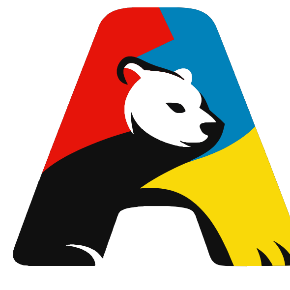

POLITYCZNY PROFIL WARTOŚCI
Poznaj swój profil polityczny, sprawdź zgodność z ideologiami, partiami i figurami politycznymi oraz zobacz wynik na kompasie wartości.
Wybierz wersję testu
Lista zostanie wczytana po otwarciu.
⚠️ Informacja przed testem
Niektóre tezy w tym teście mogą zawierać ukryte presupozycje - np. zakładać istnienie państwa, własności prywatnej, walki klasowej lub inny punkt wyjścia, z którym możesz się nie zgadzać.
Inne tezy mogą po prostu nie mieć sensu z perspektywy twojego światopoglądu.
W takich przypadkach śmiało używaj przycisku „Pomiń”. Pominięcie pytania jest w pełni akceptowalne i nie wpłynie negatywnie na wynik.
Wprost przeciwnie – im bardziej szczerze i tylko na tezy, które do Ciebie rezonują, odpowiesz, tym precyzyjniejszy będzie końcowy wynik. Nie ma potrzeby odpowiadać na wszystkie pytania – nawet 20–30 sensownych odpowiedzi da wynik, choć oczywiście im więcej, tym będzie on bardziej miarodajny.
W dowolnym momencie możesz przerwać test, skopiować swój kod z dotychczasowymi wynikami i wrócić do niego później. Po zaimportowaniu kodu nie będziesz musiał zaczynać od początku - wystarczy, że zmienisz wybrane odpowiedzi.
Uwaga praktyczna: eksport i import kodu działają znacznie stabilniej na komputerze niż na telefonie (urządzenia mobilne czasem obcinają bardzo długie ciągi znaków).
Przy niektórych tezach pojawi się dodatkowa podpowiedź, kiedy warto je pominąć. Traktuj ją jednak tylko jako sugestię, a nie nakaz. Możesz pominąć dowolną tezę w dowolnym momencie.